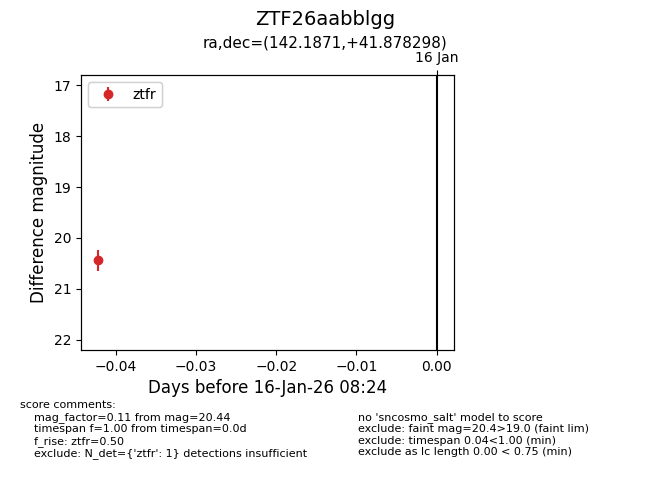
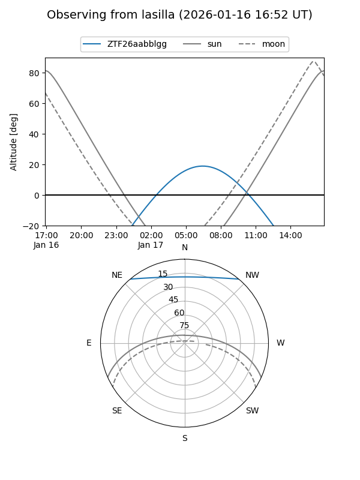
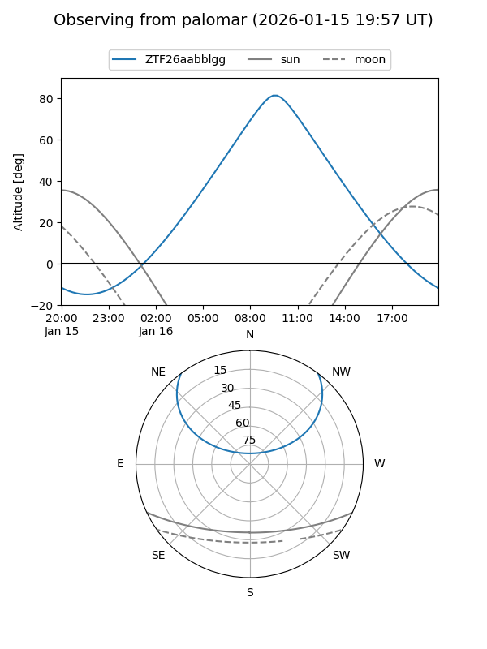

ZTF26aabblgg
Target ZTF26aabblgg at 2026-01-16 08:26
Aliases and brokers:
FINK: link
Lasair: link
ALeRCE: link
alt names
ZTF26aabblgg (ztf,fink_ztf)
Coordinates:
equatorial (ra, dec) = 142.1871,+41.87830
equatorial (HMS+DMS) = 09:28:44.92,+41:52:41.87
galactic (l, b) = (179.5888,+46.41496)
Flags:
Photometry:
last ztfr=20.44
1 ztfr detections
Lightcurve

Visibility


Additional plots